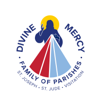
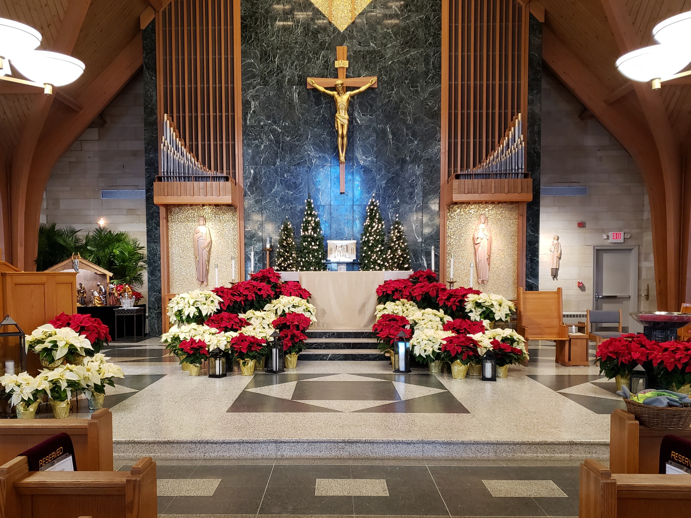
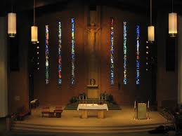
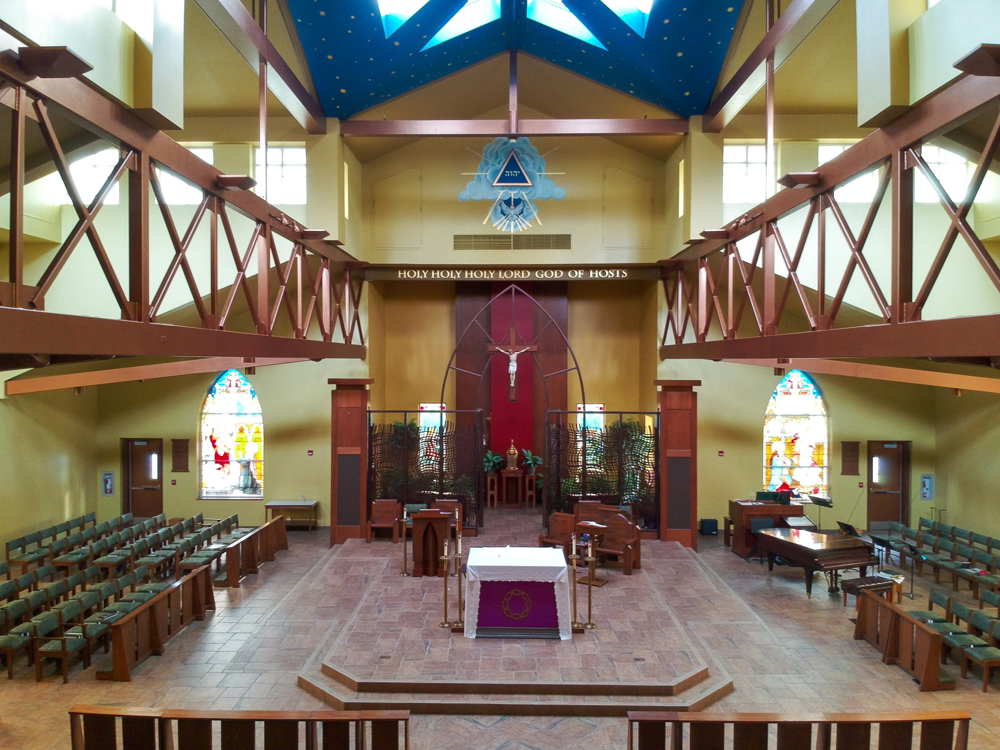

Southwest B: Bridgetown, Delhi, and Price Hill



3172 South Rd, Cincinnati, OH 45248

5924 Bridgetown Rd, Cincinnati, OH 45248

25 E Harrison Ave, North Bend, OH 45052
Insert Churches, Locations, and Mass Times
Insert Churches, Locations, and Mass Times
Insert Churches, Locations, and Mass Times